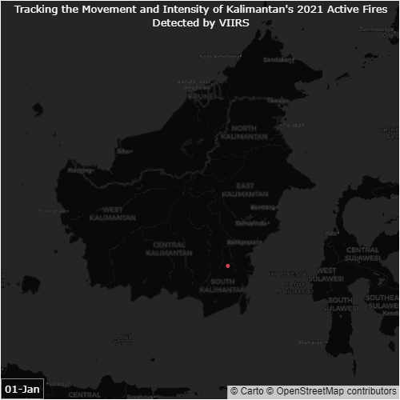

Animated Visualization of Kalimantan Wildfires in 2021
Published: 12.06.2022
I recently created an animated GIF that shows the active fires in Kalimantan throughout 2021. The data used for this visualization came from the National Centers for Environmental Information - Visible Infrared Imaging Radiometer Suite (NCEI-VIIRS) and was plotted using the Plotly Express library. The GIF provides a geographical view of fire hotspots in the region and how they change over time.

Watching the Kalimantan active fires visualization above, you’ll notice that the number of hotspots varies throughout the year, with a low number during the rainy season (around January to April) and a high number during the dry season (around July to October). This trend is reflected in the animation, where we see a gradual increase in the number of hotspots from around April, followed by a sharp rise in August and September.
The visualization also highlights how the distribution of hotspots is not uniform across the region. Some provinces, such as Central Kalimantan, South Kalimantan, and East Kalimantan, experience more hotspots than others. This could be due to a variety of factors, such as differences in land use practices, vegetation cover, or weather patterns. In summary, the Kalimantan active fires GIF provides a comprehensive view of fire dynamics in the region and can help to identify areas that are at high risk of fire outbreaks.